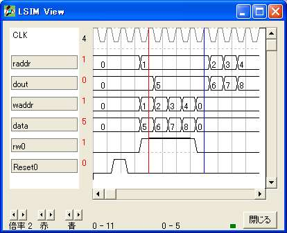
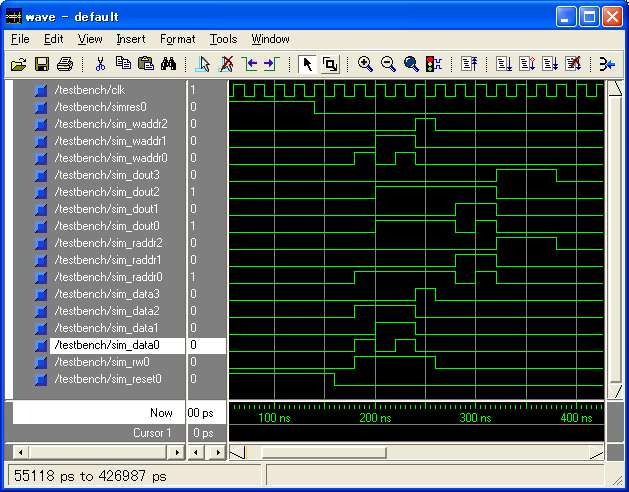

{ =============================================== }
{ メモリ }
{ =============================================== }
logicname sample
{ =============================================== }
{ 実効譜 }
{ =============================================== }
entity main
input Reset;
input rw;
input waddr[3];
input raddr[3];
input data[4];
output dout[4];
bitn writeaddr[3];
bitr regdata1p[4];
bitr regdata2p[4];
bitr regdata3p[4];
bitr regdata4p[4];
if (rw)
writeaddr=waddr;
else
writeaddr=0;
endif
if (!Reset)
if (writeaddr==1)
regdata1p=data;
else
regdata1p=regdata1p;
endif
if (writeaddr==2)
regdata2p=data;
else
regdata2p=regdata2p;
endif
if (writeaddr==3)
regdata3p=data;
else
regdata3p=regdata3p;
endif
if (writeaddr==4)
regdata4p=data;
else
regdata4p=regdata4p;
endif
endif
switch(raddr)
case 1: dout=regdata1p;
case 2: dout=regdata2p;
case 3: dout=regdata3p;
case 4: dout=regdata4p;
endswitch
ende
{ =============================================== }
{ 機能実行譜 }
{ =============================================== }
entity sim
output Reset;
output rw;
output waddr[3];
output raddr[3];
output data[4];
output dout[4];
input simres;
bitr tc[4];
{simres=0;}
part main(Reset,rw,waddr,raddr,data,dout)
if (!simres) tc=tc+1; endif
switch(tc)
case 0: Reset=1;
case 1: Reset=1;
case 3: rw=1; waddr=1; data=5; raddr=1;
case 4: rw=1; waddr=2; data=6; raddr=1;
case 5: rw=1; waddr=3; data=7; raddr=1;
case 6: rw=1; waddr=4; data=8; raddr=1;
case 7: raddr=1;
case 8: raddr=2;
case 9: raddr=3;
case 10: raddr=4;
case 11: raddr=4;
case 12: raddr=4;
endswitch
ende
endlogic
library IEEE;
use IEEE.std_logic_1164.all;
entity main is
port(clk : in std_logic;
waddr0 : in std_logic;
rw0 : in std_logic;
waddr1 : in std_logic;
waddr2 : in std_logic;
data0 : in std_logic;
Reset0 : in std_logic;
data1 : in std_logic;
data2 : in std_logic;
data3 : in std_logic;
dout0 : out std_logic;
raddr0 : in std_logic;
raddr1 : in std_logic;
raddr2 : in std_logic;
dout1 : out std_logic;
dout2 : out std_logic;
dout3 : out std_logic);
end main;
architecture RTL of main is
signal n_n21 : std_logic ;
signal n_n22 : std_logic ;
signal n_n23 : std_logic ;
signal n_n24 : std_logic ;
signal n_n26 : std_logic ;
signal n_n27 : std_logic ;
signal n_n28 : std_logic ;
signal n_n29 : std_logic ;
signal n_n31 : std_logic ;
signal n_n32 : std_logic ;
signal n_n33 : std_logic ;
signal n_n34 : std_logic ;
signal n_n36 : std_logic ;
signal n_n37 : std_logic ;
signal n_n38 : std_logic ;
signal n_n39 : std_logic ;
signal n_n17 : std_logic ;
signal n_n18 : std_logic ;
signal n_n19 : std_logic ;
signal n_n55 : std_logic ;
signal n_n57 : std_logic ;
signal n_n58 : std_logic ;
signal n_n48 : std_logic ;
signal n_n69 : std_logic ;
signal n_n72 : std_logic ;
signal n_n73 : std_logic ;
signal n_n63 : std_logic ;
signal n_n84 : std_logic ;
signal n_n87 : std_logic ;
signal n_n88 : std_logic ;
signal n_n78 : std_logic ;
signal n_n100 : std_logic ;
signal n_n102 : std_logic ;
signal n_n103 : std_logic ;
signal n_n93 : std_logic ;
begin
process(clk) begin
if (clk' event and clk='1') then
n_n21 <= (data0 and not Reset0 and not n_n57 and not n_n58)
or (n_n21 and not Reset0 and not n_n48) ;
n_n22 <= (data1 and not Reset0 and not n_n57 and not n_n58)
or (n_n22 and not Reset0 and not n_n48) ;
n_n23 <= (data2 and not Reset0 and not n_n57 and not n_n58)
or (n_n23 and not Reset0 and not n_n48) ;
n_n24 <= (data3 and not Reset0 and not n_n57 and not n_n58)
or (n_n24 and not Reset0 and not n_n48) ;
n_n26 <= (data0 and not Reset0 and not n_n72 and not n_n73)
or (n_n26 and not Reset0 and not n_n63) ;
n_n27 <= (data1 and not Reset0 and not n_n72 and not n_n73)
or (n_n27 and not Reset0 and not n_n63) ;
n_n28 <= (data2 and not Reset0 and not n_n72 and not n_n73)
or (n_n28 and not Reset0 and not n_n63) ;
n_n29 <= (data3 and not Reset0 and not n_n72 and not n_n73)
or (n_n29 and not Reset0 and not n_n63) ;
n_n31 <= (data0 and not Reset0 and not n_n87 and not n_n88)
or (n_n31 and not Reset0 and not n_n78) ;
n_n32 <= (data1 and not Reset0 and not n_n87 and not n_n88)
or (n_n32 and not Reset0 and not n_n78) ;
n_n33 <= (data2 and not Reset0 and not n_n87 and not n_n88)
or (n_n33 and not Reset0 and not n_n78) ;
n_n34 <= (data3 and not Reset0 and not n_n87 and not n_n88)
or (n_n34 and not Reset0 and not n_n78) ;
n_n36 <= (data0 and not Reset0 and not n_n102 and not n_n103)
or (n_n36 and not Reset0 and not n_n93) ;
n_n37 <= (data1 and not Reset0 and not n_n102 and not n_n103)
or (n_n37 and not Reset0 and not n_n93) ;
n_n38 <= (data2 and not Reset0 and not n_n102 and not n_n103)
or (n_n38 and not Reset0 and not n_n93) ;
n_n39 <= (data3 and not Reset0 and not n_n102 and not n_n103)
or (n_n39 and not Reset0 and not n_n93) ;
end if;
end process;
n_n17 <= (waddr0 and rw0) ;
n_n18 <= (waddr1 and rw0) ;
n_n19 <= (waddr2 and rw0) ;
n_n55 <= (waddr1 and rw0)
or (rw0 and waddr2) ;
n_n57 <= (not n_n55 and not n_n17) ;
n_n58 <= (waddr1 and rw0)
or (rw0 and waddr2) ;
n_n48 <= (not n_n57 and not n_n58) ;
n_n69 <= (not n_n19 and not n_n18) ;
n_n72 <= (not n_n19 and not n_n18) ;
n_n73 <= (not n_n69 and not n_n19 and waddr0 and rw0)
or (not n_n69 and rw0 and waddr2) ;
n_n63 <= (not n_n72 and not n_n73) ;
n_n84 <= (not n_n19 and not n_n18) ;
n_n87 <= (not n_n84 and not n_n19 and not n_n17)
or (not n_n19 and not n_n18) ;
n_n88 <= (not n_n84 and waddr2 and rw0) ;
n_n78 <= (not n_n87 and not n_n88) ;
n_n100 <= (waddr2 and waddr1 and rw0) ;
n_n102 <= (not n_n19 and not n_n100) ;
n_n103 <= (waddr2 and not n_n100 and waddr0 and rw0)
or (waddr2 and rw0 and waddr1) ;
n_n93 <= (not n_n102 and not n_n103) ;
dout0 <= (n_n21 and raddr0 and not raddr1 and not raddr2)
or (not raddr0 and raddr1 and not raddr2 and n_n26)
or (raddr0 and raddr1 and not raddr2 and n_n31)
or (not raddr0 and not raddr1 and raddr2 and n_n36) ;
dout1 <= (n_n22 and raddr0 and not raddr1 and not raddr2)
or (not raddr0 and raddr1 and not raddr2 and n_n27)
or (raddr0 and raddr1 and not raddr2 and n_n32)
or (not raddr0 and not raddr1 and raddr2 and n_n37) ;
dout2 <= (n_n23 and raddr0 and not raddr1 and not raddr2)
or (not raddr0 and raddr1 and not raddr2 and n_n28)
or (raddr0 and raddr1 and not raddr2 and n_n33)
or (not raddr0 and not raddr1 and raddr2 and n_n38) ;
dout3 <= (n_n24 and raddr0 and not raddr1 and not raddr2)
or (not raddr0 and raddr1 and not raddr2 and n_n29)
or (raddr0 and raddr1 and not raddr2 and n_n34)
or (not raddr0 and not raddr1 and raddr2 and n_n39) ;
end RTL;

